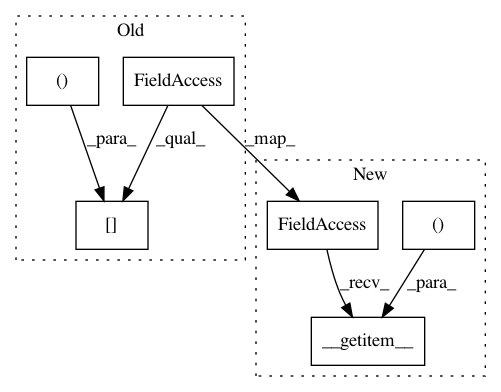

7570ee1d758c93dd4054009fc12be6cc31b54031,gpytorch/lazy/interpolated_lazy_tensor.py,InterpolatedLazyTensor,_get_indices,#InterpolatedLazyTensor#Any#Any#,261
Before Change
return res
def _get_indices(self, left_indices, right_indices):
left_interp_indices = self.left_interp_indices[left_indices, :]
left_interp_values = self.left_interp_values[left_indices, :]
right_interp_indices = self.right_interp_indices[right_indices, :]
right_interp_values = self.right_interp_values[right_indices, :]
After Change
return res
def _get_indices(self, left_indices, right_indices, *batch_indices):
left_interp_indices = self.left_interp_indices.__getitem__((*batch_indices, left_indices))
left_interp_values = self.left_interp_values.__getitem__((*batch_indices, left_indices))
right_interp_indices = self.right_interp_indices.__getitem__((*batch_indices, right_indices))
right_interp_values = self.right_interp_values.__getitem__((*batch_indices, right_indices))
In pattern: SUPERPATTERN
Frequency: 4
Non-data size: 6
Instances
Project Name: cornellius-gp/gpytorch
Commit Name: 7570ee1d758c93dd4054009fc12be6cc31b54031
Time: 2018-11-25
Author: gpleiss@gmail.com
File Name: gpytorch/lazy/interpolated_lazy_tensor.py
Class Name: InterpolatedLazyTensor
Method Name: _get_indices
Project Name: cornellius-gp/gpytorch
Commit Name: 7570ee1d758c93dd4054009fc12be6cc31b54031
Time: 2018-11-25
Author: gpleiss@gmail.com
File Name: gpytorch/lazy/matmul_lazy_tensor.py
Class Name: MatmulLazyTensor
Method Name: _get_indices
Project Name: cornellius-gp/gpytorch
Commit Name: 7570ee1d758c93dd4054009fc12be6cc31b54031
Time: 2018-11-25
Author: gpleiss@gmail.com
File Name: gpytorch/lazy/non_lazy_tensor.py
Class Name: NonLazyTensor
Method Name: _get_indices
Project Name: cornellius-gp/gpytorch
Commit Name: 7570ee1d758c93dd4054009fc12be6cc31b54031
Time: 2018-11-25
Author: gpleiss@gmail.com
File Name: gpytorch/lazy/lazy_evaluated_kernel_tensor.py
Class Name: LazyEvaluatedKernelTensor
Method Name: _get_indices